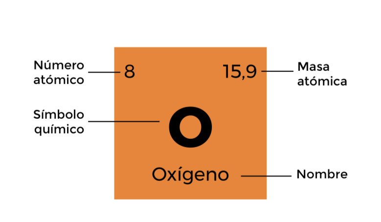

TABLA PERIODICA DE LOS ELEMENTOS |
||||||||||||||||||
|---|---|---|---|---|---|---|---|---|---|---|---|---|---|---|---|---|---|---|
| Grupos = | 1 | 2 | 3 | 4 | 5 | 6 | 7 | 8 | 9 | 10 | 11 | 12 | 13 | 14 | 15 | 16 | 17 | 18 |
| Periodos 1 | 1 1,0 HHidrogeno 1s1 |
2 4,0 HeHelio 1s2 |
||||||||||||||||
| 2 | 3 6,9 LiLitio [He]2s1 |
4 9,0 BeBerilio [He]2s2 |
 | Gases nobles Halógenos Metaloides |
Alcalinotérreos Lantánidos Actínidos |
5 10,8 BBoro [He]2s22p1 |
6 12,0 CCarbono [He]2s22p2 |
7 14,0 NNitrógeno [He]2s22p3 |
8 15,9 OOxígeno [He]2s22p4 |
9 19,0 FFlúor [He]2s22p5 |
10 20,2 NeNeón [He]2s22p6 |
|||||||
| 3 | 11 23,0 NaSodio [Ne]3s1 |
12 24,3 MgMagnesio [Ne]3s2 |
13 27,0 AlAlumino [Ne]3s23p1 |
14 28,1 SiSilicio [Ne]3s23p2 |
15 31,0 PFósforo [Ne]3s23p3 |
16 32,1 SAzúfre [Ne]3s23p4 |
17 35,5 ClCloro [Ne]3s23p5 |
18 39,9 ArArgón [Ne]3s23p6 |
||||||||||
| 4 | 19 39,1 KPotasio [Ar]4s1 |
20 40,1 CaCalcio [Ar]4s2 |
21 45,0 ScEscandio [Ar]3d14s2 |
22 47,9 TiTitanio [Ar]3d24s2 |
23 50,9 VVanadio [Ar]3d34s2 |
24 52,0 CrCromo [Ar]3d54s1 |
25 54,9 MnManganeso [Ar]3d54s2 |
26 55,8 FeHierro [Ar]3d64s2 |
27 58,9 CoCobalto [Ar]3d74s2 |
28 58,7 NiNíquel [Ar]3d84s2 |
29 63,5 CuCobre [Ar]3d104s1 |
30 65,4 ZnCinc [Ar]3d104s2 |
31 69,7 GaGalio [Ar]3d104s24p1 |
32 72,6 GeGermanio [Ar]3d104s24p2 |
33 74,9 AsArsénico [Ar]3d104s24p3 |
34 79,0 SeSelenio [Ar]3d104s24p4 |
35 79,9 BrBromo [Ar]3d104s24p5 |
36 83,8 KrKriptón [Ar]3d104s24p6 |
| 5 | 37 85,5 RbRubidio [Kr]5s1 |
38 87,6 SrEstroncio [Kr]5s2 |
39 88,9 YItrio [Kr]4d15s2 |
40 91,2 ZrCirconio [Kr]4d25s2 |
41 92,9 NbNiobio [Kr]4d45s1 |
42 95,9 MoMolibdeno [Kr]4d55s1 |
43 (98) TcTecnecio [Kr]4d55s2 |
44 101,1 RuRutenio [Kr]4d75s1 |
45 102,9 RhRodio [Kr]4d85s1 |
46 106,4 PdPaladio [Kr]4d10 |
47 107,9 AgPlata [Kr]4d105s1 |
48 112,4 CdCadmio [Kr]4d105s2 |
49 114,8 InIndio [Kr]4d105s25p1 |
50 118,7 SnEstaño [Kr]4d105s25p2 |
51 121,8 SbAntimonio [Kr]4d105s25p3 |
52 127,6 TeTeluro [Kr]4d105s25p4 |
53 126,9 IYodo [Kr]4d105s25p5 |
54 131,3 XeXenón [Kr]4d105s25p6 |
| 6 | 55 132,9 CsCesio [Xe]6s1 |
56 137,3 BaBario [Xe]6s2 |
71 175,0 LuLutecio [Xe]4f145d16s2 |
72 178,5 HfHafnio [Xe]4f145d26s2 |
73 180,9 TaTantalo [Xe]4f145d36s2 |
74 183,8 WWolframio [Xe]4f145d46s2 |
75 186,2 ReRenio [Xe]4f145d56s2 |
76 190,2 OsOsmio [Xe]4f145d66s2 |
77 192,2 IrIridio [Xe]4f145d76s2 |
78 195,1 PtPlatino [Xe]4f145d96s1 |
79 197,0 AuOro [Xe]4f145d106s1 |
80 200,6 HgMercurio [Xe]4f145d106s2 |
81 204,4 TlTalio [Xe]4f145d106s26p1 |
82 207,2 PbPlomo [Xe]4f145d106s26p2 |
83 209,2 BiBismuto [Xe]4f145d106s26p3 |
84 (210) PoPolonio [Xe]4f145d106s26p4 |
85 (210) AtAstato [Xe]4f145d106s26p5 |
86 (222) RnRadón [Xe]4f145d106s26p6 |
| 7 | 87 (223) FrFrancio [Rn]7s1 |
88 (226) RaRadio [Rn]7s2 |
103 (262) LrLaurencio [Rn]5f147s27p1 |
104 (261) RfRutherfordio [Rn]5f146d27s2 |
105 (262) DbDubnio [Rn]5f146d37s2 |
106 (266) SgSeaborgio [Rn]5f146d47s2 |
107 (264) BhBohrio [Rn]5f146d57s2 |
108 (277) HsHassio [Rn]5f146d67s2 |
109 (268) MtMeitnerio [Rn]5f146d77s2 |
110 (281) DsDarmstatio [Rn]5f146d87s2 |
111 (280) RgRoentgenio [Rn]5f146d97s2 |
112 (285) CnCopernicio [Rn]5f146d107s2 |
113 (284) NhNihonio [Rn]5f146d107s27p1 |
114 (289) FlFlerovio [Rn]5f146d107s27p2 |
115 (288) McMoscovio [Rn]5f146d107s27p3 |
116 (292) LvLivermorio [Rn]5f146d107s27p4 |
117 (294) TsTeneso [Rn]5f146d107s27p5 |
118 (294) OgOganesón [Rn]5f146d107s27p6 |
57 138,9 LaLantano [Xe]5d16s2 |
58 140,1 CeCerio [Xe]4f15d16s2 |
59 140,9 PrPraseodimio [Xe]4f36s2 |
60 144,2 NdNeodimio [Xe]4f46s2 |
61 (145) PmPrometio [Xe]4f56s2 |
62 150,4 SmSamario [Xe]4f66s2 |
63 152,0 EuEuropio [Xe]4f76s2 |
64 157,2 GdGadolinio [Xe]4f75d16s2 |
65 158,9 TbTerbio [Xe]4f96s2 |
66 162,5 DyDisprosio [Xe]4f106s2 |
67 164,9 HoHolmio [Xe]4f116s2 |
68 167,3 ErErbio [Xe]4f126s2 |
69 168,9 TmTulio [Xe]4f136s2 |
70 173,0 YbIterbio [Xe]4f146s2 |
|||||
89 (227) AcActinio [Rn]6d17s2 |
90 232,0 ThTorio [Rn]6d27s2 |
91 231,0 PaProtactinio [Rn]5f26d17s2 |
92 238,0 UUranio [Rn]5f36d17s2 |
93 (237) NpNeptunio [Rn]5f46d17s2 |
94 (244) PuPlutonio [Rn]5f67s2 |
95 (243) AmAmericio [Rn]5f77s2 |
96 (247) CmCurio [Rn]5f76d17s2 |
97 (247) BkBerkelio [Rn]5f97s2 |
98 (251) CfCalifornio [Rn]5f107s2 |
99 (252) EsEinstenio [Rn]5f117s2 |
100 (257) FmFermio [Rn]5f127s2 |
101 (258) MdMendelevio [Rn]5f137s2 |
102 (259) NoNobelio [Rn]5f147s2 |
|||||